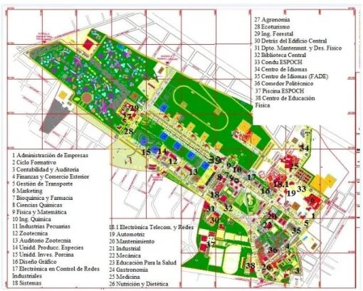

Agenda académica
Consulta eventos, feriados y actividades importantes para planificar clases, entregas y trámites.
Guía digital para estudiantes
MiPoli reúne enlaces institucionales, orientación de campus, servicios estudiantiles y rutas de apoyo para que la vida universitaria sea más simple desde el primer día.

Qué resuelve
MiPoli está pensado como una puerta de entrada para estudiantes de la ESPOCH: ayuda a ubicar recursos, entender áreas académicas y encontrar enlaces que normalmente están dispersos.
Servicios MiPoli
Se priorizaron funciones realistas para una guía estudiantil: organización, enlaces, orientación y navegación por el campus.
Consulta eventos, feriados y actividades importantes para planificar clases, entregas y trámites.
Reúne aula virtual, correo, biblioteca y servicios ESPOCH en un solo lugar.
Identifica facultades, biblioteca, comedor, dispensario y otros puntos de referencia del campus.
Encuentra organizaciones, clubes y espacios donde participar más allá de las aulas.
Orienta a estudiantes que quieren sumarse a semilleros, proyectos, laboratorios o tesis aplicadas.
Resume pasos habituales para movilidad, idiomas, documentación y oportunidades externas.
Explora por área
Cada sección ofrece una explicación breve, rutas de acción y recomendaciones para estudiantes nuevos o en curso.
Campus
El mapa ayuda a ubicar espacios frecuentes: biblioteca, comedor, facultades, centro de idiomas, dispensario, áreas deportivas y unidades académicas.

Apoyo estudiantil
Se retiró la función sensible anterior porque no tenía respaldo técnico. En su lugar, MiPoli puede servir como guía para identificar contactos, puntos de ayuda y canales institucionales reales.
Ten a mano números de familia, tutor académico, compañeros y seguridad institucional.
Ubica dispensario médico, bienestar estudiantil y oficinas de información del campus.
Comparte puntos de referencia concretos cuando necesites pedir ayuda.
En una emergencia real, usa los canales oficiales de respuesta y asistencia.
Planificación
Un espacio para revisar fechas y actividades relevantes durante el semestre.
Contacto
Esta sección deja de pedir pagos o datos bancarios y se enfoca en información de contacto y orientación.
Panamericana Sur km 1 1/2, Riobamba EC060155.
+593 (03) 299-8200
(03) 2317-001
Usa tu correo institucional para trámites académicos y comunicaciones oficiales.
Consulta horarios vigentes en los canales oficiales de cada dependencia.